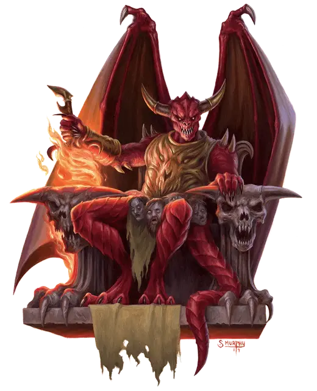

Бел
Bel
Большое Исчадие (Дьявол), законно-злое, именной НИП

Класс Доспеха 19 (природный доспех)
Хиты 364 (27к10 + 216)
Скорость 30 футов, летая 60 футов
| мод | спас | ||
|---|---|---|---|
| СИЛ | 28 | +9 | +9 |
| ЛОВ | 14 | +2 | +10 |
| ТЕЛ | 26 | +8 | +16 |
| мод | спас | ||
|---|---|---|---|
| ИНТ | 25 | +7 | +7 |
| МДР | 19 | +4 | +12 |
| ХАР | 26 | +8 | +8 |
Навыки Магия +15, Обман +16, Проницательность +12, Убеждение +16
Сопротивление урону холод; дробящий, колющий, рубящий от немагических атак, кроме нанесённых посеребрённым оружием
Иммунитет к урону огонь, яд
Иммунитет к состояниям отравление
Чувства истинное зрение 120 футов, пассивное Восприятие 14
Языки Общий, Инфернальный, Телепатия 120 фт.
Опасность 25 (75000 опыта)
Бонус мастерства +8
Особенности
Легендарное сопротивление (3/день). Если Бел проваливает спасбросок, он может вместо этого сделать спасбросок успешным.
Магическое оружие. Атаки оружием Бела являются магическими.
Сопротивление магии. Бел совершает с преимуществом спасброски от заклинаний и прочих магических эффектов.
Аура страха. Все враждебные Белу существа, начинающие свой ход в пределах 20 футов от него, должны совершить спасбросок Мудрости Сл 23, если Бел дееспособен. При провале существо становится испуганым до начала своего следующего хода. При успехе существо получает невосприимчивость к Ауре страха Бела на следующие 24 часа.
Врождённое колдовство. Базовой характеристикой Бела является Харизма (Сл спасброска от заклинания 23). Он может накладывать следующие заклинания, не нуждаясь в материальных компонентах:
• Неограниченно: обнаружение магии [detect magic], огненный шар [fireball];
• 3/день каждое: рассеивание магии [dispel magic], удержание чудовища [hold monster], отражения [mirror image], фальшивый двойник [mislead], оживление [raise dead], телепортация [teleport], огненная стена [wall of fire];
• 1/день каждое: заточение [imprisonment], метеоритный дождь [meteor swarm].
Действия
Мультиатака. Бел совершает три атаки: две двуручным мечом и одну хвостом.
Двуручный меч. Рукопашная атака оружием: +16 к попаданию, досягаемость 10 футов, одна цель. Попадание: 23 (4к6 + 9) рубящего урона плюс 21 (6к6) урона огнём. Если цель—горючий объект, который не носят и не несут, он загорается.
Хвост. . Рукопашная атака оружием: +16 к попаданию, досягаемость 10 футов, одна цель. Попадание: 25 (3к10 + 9) дробящего урона. Если цель—существо, она должна совершить спасбросок Телосложения Сл 23, при провале она становится ошеломлённой до конца своего следующего хода.
Легендарные действия
Бел может совершить 3 легендарных действия, выбирая из представленных ниже вариантов. За один раз можно использовать только одно легендарное действие, и только в конце хода другого существа. Бел восстанавливает использованные легендарные действия в начале своего хода.
Огненный шар. Бел накладывает огненный шар [fireball].
Тактическое преимущество (стоит 2 действия). Бросьте за Бела к6. Вычтите результат из следующего броска атаки, совершённой в течении следующей минуты по Белу или его союзнику, по его выбору.
Призыв ледяного дьявола (стоит 3 действия). Бел магически призывает ледяного дьявола [ice devil] с ледяным копьём. Дьявол появляется в свободном пространстве в пределах 60 футов от Бела, действует как союзник Бела и может призывать других дьяволов, если у него есть такая способность. Ледяной дьявол остаётся, пока Бел не умрёт или не отпустит его действием.
Описание
Бел надзирает за производством оружия и брони для Войны Крови. Хотя Асмодей и велел Зариэли сделать Бела своим советником. Бел с Зариэлью друг друга на дух не переносят и выдумывают способы не пересекаться. Узнав о намерениях персонажей, Бел решит использовать их как пешек, чтобы бросить тень на Зариэль и в итоге свергнуть её.
Внешне Бел прикидывается вернейшим вассалом Зариэли. Втайне же он с помощью телепатии обсудит с персонажами предательский план.